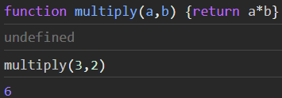

This website documents the learning goals for node.js course at KEA. The goal for this website is to be a go to documentation for using express with node.js throughout this course. Also, some basic JavaScript will be covered such as functions and promises, aswell as going through http, client/server, working with js modules
JavaScript was invented as an adition to HTML and CSS. This would make it possible
to write functions to make any HTML update dynamically according to the choice of the users
who are using a website.
JavaScript is currently one of the most written programming languages in the world, and even though
adding dynamic changes to any user interface, the JavaScript language has a lot more to offer
nowadays, than it had back when it was invented.
JavaScript can be written in any browser. Just take a look yourself!
1) Open up Google Chrome
2) Go to the developers tool by right clicking and press inspect
3) Go to the console
In the console, it's possible to write functions, declaring variables and much more.
But now, lets define a function and use it.
Write this into the console:
function multiply(a,b) {
return a*b;
}
If we call this functions and enter the two parameters, we can see that this function returns the answer for multiplying these values

Rather than using JavaScript in our browser, it is possible to install Node as a runtime enviroment
for JavaScript. This means that it can run anywhere as long as Node is installed.
Node.js download
Once it's downloaded, open op the terminal and make sure Node is downloaded:
node -v
If a version shows up, Node is downloaded.
This means we can access Node in our terminal and write JavaScript code and run it.
To do this, write the exact same code as in the browser and call the function:
function multiply(a,b) {return a*b;}
undefined
multiply(3,2)
6
To exit the terminal press CRTL + C twice
Git is a version control systems that allows you to stage current versions of your code.
It also has tracking, so it's possible to go back to previous versions.
GitHub is the primary service to publish code. Once the code is ready and a repository is set up
on GitHub, it's very easy to publish the code.
Open a terminal in VS Code and commit and push with these commands:
// add all new and edited files git add -A// commit the changes with a messagegit commit -m "MESSAGE"// push the code to the repositorygit push